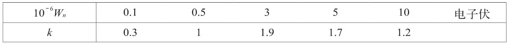
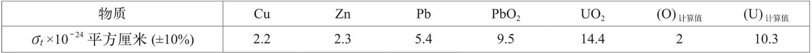
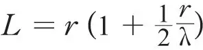
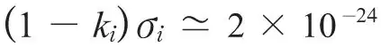
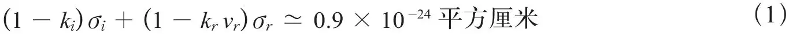
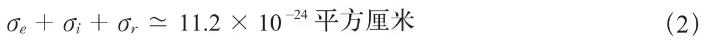

英文
英文戈尔德施泰因等
编者按
本文戈尔德施泰因、罗格兹尼斯基和瓦伦描述了测量中子与铀核如何相互作用的实验。他们使用钋–铍源的中子辐照氧化铅和氧化铀的样品，并用电离室探测中子。他们可以估算出有能量变化和无能量变化两种实验情况下散射中子的“截面”，即中子与核碰撞的“尺寸”。正如他们所说的，他们计算得出的截面比先前估算的稍高，这意味着中子在铀中的行程比想象的稍小。反过来说，这也表明了链式反应的临界质量值也可能小于原先估算的值。 英文
本文所描述的内容仅涉及快中子，目标是研究铀的快中子散射以及核裂变过程中可能伴随的中子发射。 英文
实验是用一个钋–铍源（相当于3毫居氡–铍源）完成的。我们用2.5厘米厚的铅板包围电离室来作为中子探测器，室内充满了35个大气压的氢气。绝缘电极与补偿静电计电子管相连接[1]，栅漏电阻为1011欧姆，标度灵敏度为每分度1.2×10－15安培。 英文
我们使用了两套实验装置：（1）实验源位于电离室和作为散射体的物质之间，其中散射体物质的性质和厚度是可变的；（2）实验源位于边长为16厘米的立方体中心，其中交替填充氧化铀（比重d = 4.0）和氧化铅（压缩后比重d = 3.8）。 英文
第一种实验给出了总的散射截面，可以表示为σt=σe+kiσi；对于氧化铀，散射截面为σt=σe+kiσi+krvrσr，其中，σe、σi、σr分别是弹性散射、非弹性散射及裂变的平均截面；vr是每次裂变产生的平均中子数；ki和kr分别是电离室对发生非弹性碰撞的中子和裂变产生的中子的平均效率因子；直接入射中子的效率因子取为1，即k=1。对于由质量足够高的原子核弹性散射的中子，ke = k =1。我们在考虑了电离室的尺寸、质子投射截面等值后计算了k的值。现在认为[2]，钋–铍源的中子能谱包含了Wn小于105电子伏的中子的50%。因此，我们得到：

鉴于一种可行的外推法可以给出铀的σe+kiσi值，我们以相同的方法用氧化铅、铅、铜和锌与中子发生散射进行实验。 英文
第一种实验结果如下：

假定氧化铅和氧化铀截面具有可加性的前提下，我们计算了铀和氧的截面值。 英文
第二种实验我们在一阶近似下给出了吸收系数（1-ki）σi+（1-krvr）σr的值，σe的值只是作为中子从假设为球形的块状物体逃逸前的测定平均自由程λ和中子穿行平均距离L的修正项，球块的半径是r，且

。考虑到以前实验的结果，这个实验给出了铅的
平方厘米。假定σi的值能达到σe值[3]的30%，则有ki（≃）0。 英文
对于铀我们不仅要考虑σi，还要考虑vrσr，而对于其他物质很有可能由于ki的值很小，σt与σe的值相差并不大。 英文
对于铀的情况，我们有

或者，在式子两边加上σt将消掉ki和kr，得到

如果假定每次裂变都产生放射性元素，约里奥和安德森等人[4]测得的截面值则与σr一致，他们测得的结果是σr≃10－25平方厘米。在这种情况下，我们看到，（σe + σi）的值（≃11.1×10－24平方厘米）远大于外推法所给出的值（≃6×10－24平方厘米）。 英文
另一方面，根据（1）式的结果可知，如果σi的值与接下来σr的值（1×10－24~2×10－24平方厘米）相近的话，在ki和kr系数运用合理的假定下，vr的值是可变的，例如可以从1取到5甚至更大的值。 英文
可以看到，只要不能独立地测定σi值，在这类实验中我们就不能测定vr和σr（分裂的特征）的值，也就不能断定是否释放了中子；更不用说得到可能发生链式反应的结论了，这与类似实验的结果[5]相反。 英文
通过使用电离室，唯一可以确定的合理情况是，对于中子的产生，如果链式反应可以实现的话[6]，通过使用足量的铀，链式反应就可以产生出中子的倍增效应。 英文
综上所述，通过运用钋–铍中子源的这些实验可知，对铀核截面求和，即σe+σi+σr=（11.2±1.5）×10－24平方厘米。这个值表明铀中的平均自由程远小于通常公认的值；而这也意味着可以用比现在预期的更小的质量来实现链式核裂变。 英文
（沈乃澂 翻译；张焕乔 审稿）